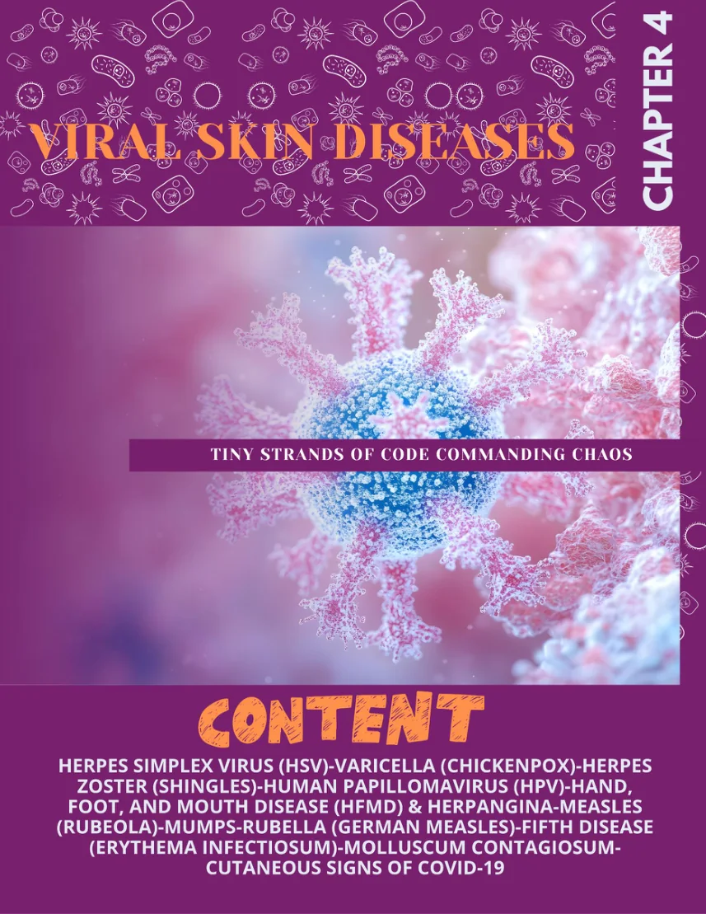

تعلّم بعد كل سؤال
الإجابة والتفسير والـClinical Reasoning يظهرون فورًا.
صفحة مستقلة للأمراض الجلدية الفيروسية تجمع 150 سؤالًا ثنائي اللغة في التشخيص والكيسات والعلاج والصور السريرية.

CHAPTER 04كل بطاقة تفتح تدريب الموضوع مباشرة، وتوضح عدد الأسئلة وأنواعها مع Clinical Pearl سريعة تساعدك تبدأ من النقطة الصح.
ابدأ من Topic محدد، اختبر نفسك في عشرة أسئلة عشوائية، أو ادخل امتحان الفصل الكامل. ترتيب الاختيارات يتغير تلقائيًا حتى لا تحفظ نمط الإجابة.
الإجابة والتفسير والـClinical Reasoning يظهرون فورًا.
عشرة أسئلة عشوائية من الفلاتر المختارة أو من الفصل كله.
الإجابات لا تظهر حتى تنهي الجلسة وتشاهد تحليل الأداء.
اختار الموضوع والنوع والصعوبة. يمكنك البحث بالكلمة، حفظ الأسئلة، واستكمال تقدمك لاحقًا من نفس الجهاز.
غيّر البحث أو اختار All في أحد الفلاتر وابدأ المجموعة من جديد.
النتائج تتحدث تلقائيًا حسب كل Topic. النسبة تعتمد على الأسئلة التي أجبت عنها، وليس على إجمالي أسئلة الموضوع.